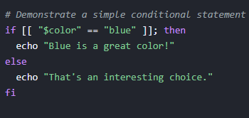
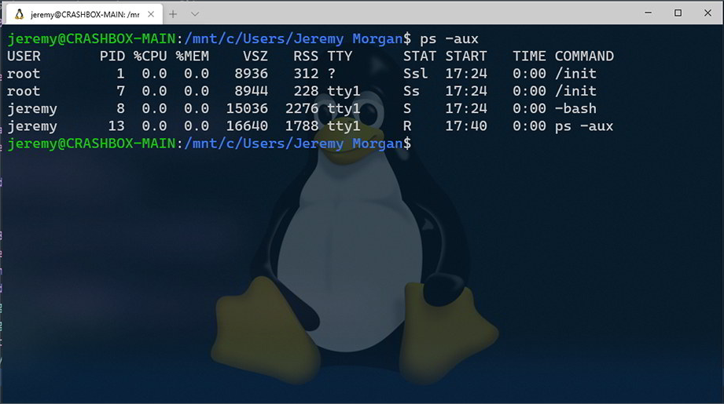
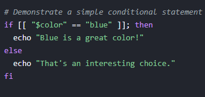
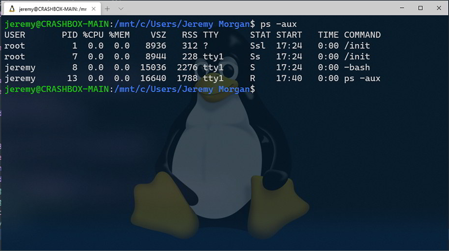

Bash (Bourne Again Shell) is one of the most widely-used command line interpreters for Linux, macOS, and even Windows via WSL. It allows you to interact with your system by running commands, automating tasks, and writing powerful scripts.
brew install bash 


